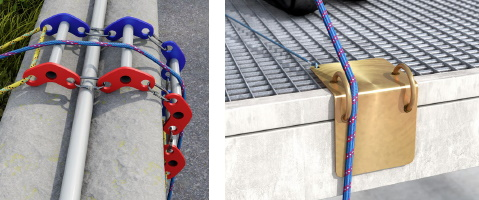
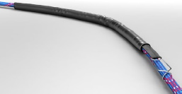

Persönliche Absturzschutzausrüstungen zum Retten/Rettungssysteme werden im Vorfeld für den jeweiligen Einsatzzweck ausgewählt und sind bestimmungsgemäß zu benutzen.
Grundlagen für die bestimmungsgemäße Benutzung der Rettungssysteme sind die Gebrauchsanleitung des Herstellers und die Betriebsanweisung des Unternehmers oder der Unternehmerin (siehe Abschnitt 10 und Anhang 2).
Vor jeder Benutzung hat sich die benutzende Person durch Sicht- und Funktionsprüfung vom einsatzfähigen Zustand der Ausrüstung zu überzeugen.
Persönliche Absturzschutzausrüstungen zum Retten/Rettungssysteme dürfen nur zur Rettung von Personen, nicht jedoch für andere Zwecke, z. B. als Anschlagmittel für Lasten, verwendet werden.
Persönliche Absturzschutzausrüstungen zum Retten/Rettungssysteme dürfen keinen schädigenden Einflüssen ausgesetzt werden. Solche Einflüsse sind z. B.
Beschädigte oder durch einen Sturz belastete persönliche Absturzschutzausrüstungen zum Retten/Rettungssysteme sind der Benutzung zu entziehen, sofern nicht eine sachkundige Person der weiteren Benutzung zugestimmt hat (siehe Abschnitt 11.3). Gegebenenfalls dürfen Abseilgeräte oder Rettungshubgeräte nach nur einer Benutzung erst dann wieder verwendet werden, wenn der Hersteller oder seine bevollmächtigte Vertretung bestätigt hat, dass die Benutzung sicher ist.
Durch längeres bewegungsloses Hängen im Auffanggurt können Gesundheitsgefahren (z. B. Hängetrauma) auftreten. Es ist umgehend der Notruf abzusetzen und notärztliche Hilfe anzufordern.
Es empfiehlt sich zur Vorbeugung des Hängetraumas, die Beine möglichst zu bewegen und dafür Hilfsmittel, z. B. Trittschlingen, zu benutzen.
Nach einem Sturz in die PSA gegen Absturz muss die hilflose Person schnellstmöglich aus der hängenden Position gerettet werden. Deshalb ist das vom Unternehmer oder der Unternehmerin vorgesehene Rettungsverfahren umgehend einzuleiten.
Nach der Rettung der Person sind in Abhängigkeit des Gesundheitszustands die üblichen Maßnahmen der Ersten Hilfe anzuwenden (siehe DGUV Information 204-007 "Handbuch zur Ersten Hilfe"). Dadurch bestimmt sich auch die Lagerung der Person (siehe hierzu auch DGUV Information 204-011 "Erste Hilfe – Notfallsituation: Hängetrauma"). Eine Flachlagerung ist möglich.
Befinden sich unterhalb der Benutzerin oder des Benutzers flüssige oder feste Stoffe, in denen man versinken kann, dürfen Rettungshubgeräte der Klasse B bzw. Abseilgeräte nicht eingesetzt werden.
Abseilgeräte und Rettungshubgeräte sind an geeigneten Anschlageinrichtungen möglichst lotrecht über der sich abseilenden oder der zu rettenden Person anzubringen. Während des Rettungsvorgangs darf das Seil nicht über scharfe Kanten verlaufen. Eine Schlaffseilbildung ist zu vermeiden.
Hinweis
Ein genügend großer Abstand zu festen Bauwerksteilen erleichtert das Abseilen oder Heraufziehen.
Tragmittel dürfen nicht über scharfe Kanten geführt werden.
Hinweis
Durch die Verwendung eines geeigneten Kantenschutzes (siehe Abbildung 24), können Beschädigungen, z. B. des Seils, durch scharfe bzw. raue Kanten vermieden werden. Eine Umhüllung des Tragmittels (siehe Abbildung 25) an der Kante bietet einen zusätzlichen Schutz.

Abb. 24 Rollenbock (links) oder Stahlblechwinkel (rechts) als Kantenschutz für ein Tragmittel aus einem Kernmantelseil

Abb. 25 Umhüllung (Seilschutz) eines Kernmantelseils mit Clip und Klettverschluss zum schnellen, einfachen Anbringen
Tragmittel dürfen nicht durch Knoten befestigt, gekürzt oder durch Zusammenknoten mit einem anderen Tragmittel verlängert werden. Tragmittel sind möglichst straff zu halten.
Bei Abseilgeräten müssen die Enden gegen unbeabsichtigtes Durchrutschen durch das Abseilgerät gesichert sein.
Die Verwendung von selbstverriegelnden Verbindungselementen, ausgestattet mit einem selbstschließenden Verschluss und einer automatischen Verschlusssicherung, ist grundsätzlich zu empfehlen. Bei automatischen Verschlusssicherungen ist die ordnungsgemäße Verriegelung vor der Benutzung zu überprüfen.
Manuell zu verriegelnde Verbindungselemente müssen gegen unbeabsichtigtes Öffnen gesichert werden.
Auf die bestimmungsgemäße Verwendung von Verbindungselementen ist zu achten. Dazu gehören insbesondere
Die Leistungs- und Funktionsfähigkeit der Rettungsausrüstung wird durch Umweltbedingungen (z. B. UV-Strahlung, Feuchtigkeit), Lagerung, Transport- und Einsatzbedingungen beeinflusst. Dazu gibt der Hersteller das Datum der Ablegereife, z. B. durch eine Codierung, auf der Ausrüstung an. Alternativ kann die Rettungsausrüstung mit Monat und Jahr der Herstellung gekennzeichnet sein, wobei zur Bestimmung der Ablegereife alle zweckdienlichen Angaben in der Gebrauchsanleitung aufgeführt sein müssen.
Jeder Rettungsausrüstung muss eine schriftliche Gebrauchsanleitung des Herstellers in deutscher Sprache beiliegen. Die Gebrauchsanleitung dient als Grundlage zur Erstellung einer Betriebsanweisung.